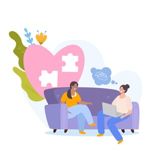
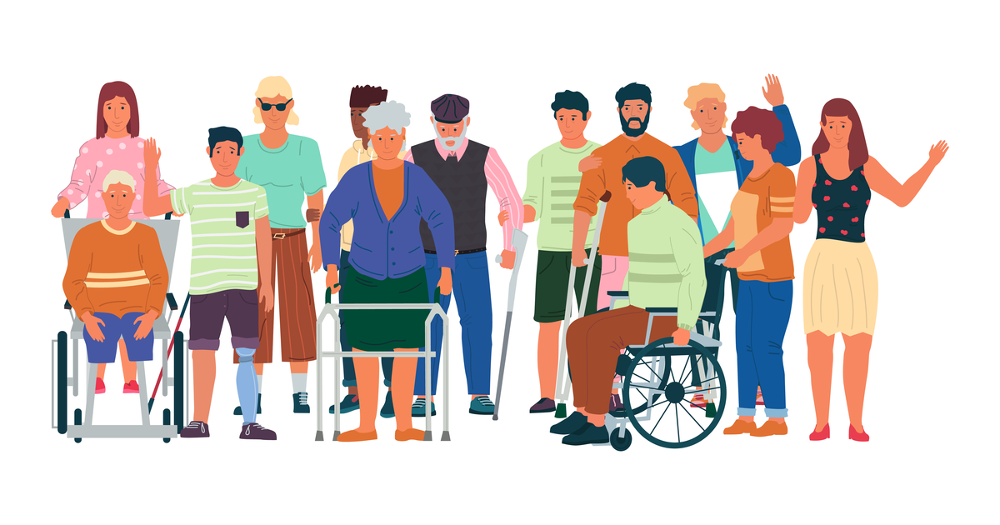

Què Oferim
La nostra ONG es dedica a oferir suport i recursos per a aquells en situació de desigualtat i pobresa. Oferim una varietat de serveis per donar suport a les persones en situació de pobresa i desigualtat. Els nostres programes inclouen:
- Assistència alimentària i d'habitatge: Proporcionem ajuda alimentària i assistència per garantir que les persones tinguin accés a aliments nutritius i a un sostre sobre els seus caps. Treballem en col·laboració amb organitzacions locals per distribuir aliments i oferir suport per trobar habitatge assequible.
- Atenció mèdica i serveis de salut: Ens assegurem que totes les persones tinguin accés a atenció mèdica de qualitat, independentment de la seva capacitat per pagar-la. Organitzem clíniques de salut gratuïtes i proporcionem assistència per accedir a medicaments i tractaments necessaris.
- Programes d'educació i capacitació: Creiem en el poder transformador de l'educació per trencar el cicle de la pobresa. Oferim programes educatius i de capacitació laboral per ajudar les persones a adquirir noves habilitats i augmentar les seves oportunitats d'ocupació i progrés econòmic.
- Suport psicosocial i emocional: Reconeixem que la pobresa i la desigualtat no només afecten les persones a nivell material, sinó també emocional i psicològicament. Per això, oferim serveis de suport psicosocial i emocional per ajudar les persones a afrontar els desafiaments i superar les barreres que enfronten. 
- Defensa de drets i promoció de polítiques públiques: Ens comprometem a advocar per polítiques públiques que abordin les causes subjacents de la desigualtat i la pobresa a Espanya. Treballem per sensibilitzar i mobilitzar la comunitat en la lluita per la justícia social i econòmica.
- Microcrèdits i finançament: Proporcionem accés a microcrèdits i finançament per a emprenedors i petites empreses en comunitats desfavorides, ajudant-los a iniciar o expandir els seus negocis i generar ingressos sostenibles.
- Programes d'inserció laboral: Oferim programes d'inserció laboral que inclouen formació, orientació professional i col·locació laboral per a persones desocupades o en risc d'exclusió social, facilitant la seva integració en el mercat laboral.
- Serveis legals i d'assessorament: Oferim serveis legals gratuïts o a baix cost, així com assessorament jurídic, per a persones que enfronten problemes legals relacionats amb l'habitatge, l'ocupació, la migració o altres aspectes de la seva vida.
- Accés a serveis bàsics: Facilitem l'accés a serveis bàsics com aigua potable, electricitat, transport públic i telecomunicacions en comunitats marginades o rurals que manquen d'aquests serveis essencials.
- Promoció de la igualtat de gènere: Desenvolupem programes i campanyes de sensibilització que promouen la igualtat de gènere i empoderin dones i nenes, proporcionant recursos i suport per superar les barreres que enfronten en l'educació, l'ocupació i la participació política.
- Promoció de la inclusió social: Organitzem activitats i esdeveniments comunitaris que fomenten la integració i la cohesió social, promovent la participació i el diàleg entre diferents grups ètnics, culturals i socioeconòmics. 
- Investigació i incidència política: Realitzem investigacions i anàlisis sobre les causes i conseqüències de la desigualtat i la pobresa a Espanya, i advocar per polítiques públiques més inclusives i equitatives a nivell local, regional i nacional.